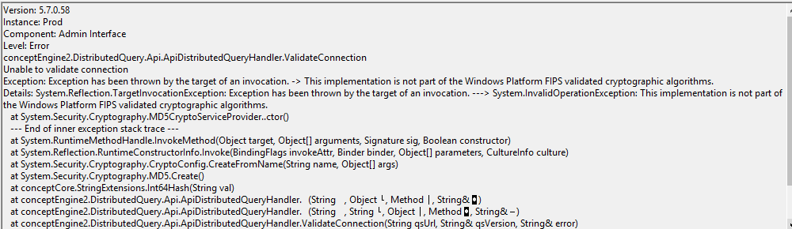

! This article is currently under review. Some of the information below may not be up to date.
Overview
The following error appears when trying to add a second DQS server:
Unable to validate Connection. This implementation is not part of the Windows Platform FIPS Validated cryptographic algorithms.

Instructions
The error occurs because the FIPSAlgorithmPolicy is enabled on both DQS servers. Follow the steps below to turn off the option:
-
On the computer where Netwrix Data CLassification is installed, open Registry Editor.
-
Go to the following path:
HKLM\System\CurrentControlSet\Control\Lsa\FIPSAlgorithmPolicy\Enabled. This registry value reflects the current FIPS setting. -
Set the value to
0for disabled. -
Restart all 3 NDC Services.
-
Close NDC Web Console and then re-open it.
-
After that, you can add second DQS Server.